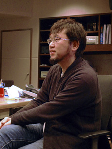
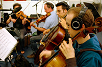
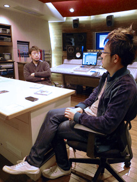

さて、ヴォーカルトラックに続いてゲーム中のステージ楽曲ですが、3枚組のこのアルバムは非常に聴き応えがあります。そこで各曲の特色・聴き所をいくつか教えて頂けますか？

床井： 聴き所は全部と言いたいくらいですよ（笑）。この3枚組の構成は、ゲーム本編のストーリーの流れを汲んでいますので、ゲームを既に手にして頂いた方には色んなシーンを思い出して頂けるんじゃないかなと思います。
まずDisc1枚目では、今作の音楽を制作するにあたり、方向性を確立させた曲として、"Tropical Resort - Act 1"と"Sweet Mountain - Act 1"があります。2曲ともアクションゲームを意識したテンポ早めな曲としており、"Tropical Resort"は宇宙空間に建設した、Dr.エッグマンの巨大遊園地という事で、所々ステージ中に宇宙空間が広がったりする所から、ギターやベースなどの演奏に加え、人工的な要素としてエレクトロを効果的に取りこんでいます。キャッチーで往年のソニックの雰囲気があると思いませんか？一方"Sweet Mountain"はお菓子を装った秘密兵器工場なので、音的にも少し人工的に、ブラスのフレーズをオーディオで取り込み、ディストーションやテープエコーなどのエフェクターを掛けて汚してみたりと、背景とオーバーラップする様な作りにしています。"Area - Tropical Resort"では、ナイツシリーズでもお馴染みの幡谷 尚史が作曲していますが、初めのエリアに相応しい、「WELCOME」な感じが出ています。アクションステージ同様、人工的な要素を多くする必要がありましたが、シンセの音色プログラムもカッコいいですね。ドライな感じのデイブダーリントン氏のミックスともすごく合っています。
『ソニック カラーズ』を初めてやると気付くと思うのですが、タイトルからスタートボタンを押すと、いきなりアクションステージが始まるんですよね。アクションゲームと言うこと自体を大事にしている作品ですので。そこでスタートボタンを押して流れる"Tropical Resort - Act 1"が否が応でも気持ちを高まらせてくれるんですよ。

床井： Disc2枚目に移りましょう。今回カットシーンやシステム曲にも使用しているオーケストラ曲を、ソニックシリーズでもお馴染みの熊谷文恵さんと共作しています。"Theme of Sonic Colors"という曲は、スタッフロールでも使用するので、とにかく長尺が必要でしたので、作曲も演奏も難易度が高かったです。演奏的には、イントロ部分のパッセージが1:47から出て来ますが、テンポがかなり早いので、収録中は「みんな頑張ってー！」と祈ってました。
この曲の一部をカットシーンの第一話と最終話に使用しています。ブックレットのコメントにもその時のエピソードを書いてますので、是非そちらをご覧になってみて下さい。"Starlight Carnival – Act 1"は、中盤のアクションステージでありながらグラフィックが圧巻な程、ゲーム本編でも一番の見せ場となっていましたので、音楽もテンションがマックスになる様にエレクトロ全開な作りとなっています。一方その次のステージ"Planet Wisp - Act 1"では、ステージ設定としてエッグマンに破壊されたウィスプの惑星という事で、少しマイナーなイメージで制作しています。メロが緩やかなので、せめてベースラインだけでも動かなければと思い、久しぶりにベースを弾きましたが、案の定腱鞘炎になりましたね（笑）。結果、スピード感が出たので演奏して良かったと思っています。
エリアマップでは、エンディングテーマも担当した南波さん作曲の"Area - Starlight Carnival"もおすすめです。アクションステージに合わせてエレクトロ色を強くして頂きましたが、こちらもアクションステージに負けず劣らずテンションが上がります。ベースラインとメロの絡み合いがカッコいいです。幡谷もそうですが、とにかくお二人ともシンセの使い方のセンスが素晴らしいです。Game Landの曲達は、8bitなプラグインを大谷と共有して制作しています。なかなか8bitな音楽を作る機会はありませんので、とても楽しかったですね。ブックレットのコメントでも触れましたが、8bitゲームをシミュレートする必要上、いかにシンプルなトラックでテンションをキープ出来るかが重要でしたので、大分こだわりました。

大谷： Game Land用のアレンジは作っていて楽しかったですよね。当初は過去曲の8bitアレンジなんて案も出してたのですが、今作のステージ曲からのアレンジにしたことで、オリジナルバージョンとの比較が面白くなって良かったと思ってます。
床井： Disc3枚目は、まず"Aquarium Park – Act 1"ですね。竜宮城をベースにエッグマンが作った水族館という設定ですので、シンセを多用し、サイバーな感じの和風テイストなイメージの曲に仕上げています。とてもキャッチーなフレーズがスピード感のあるリズムと相まって、とても心地いい音楽になっていると思います。次に"Asteroid Coaster – Act 1"では、ギターを多様したロックテイストの曲で宇宙空間と惑星内部の迷路の様な洞穴を疾走するイメージで制作しています。他のアクションステージに比べると一番ダークな感じですね。そして"Terminal Velocity Act 1～2"では、最後のアクションステージという事で、制作の中盤に岸本ディレクターから、脱出するという演出が重要で、最後は無音にしたいというリクエストがありました。そこでAct 2の尺を決めうちにする為、最後までその調整を行っていましたが、クライシス感がバッチリ出せて良かったです。『ファンタシースター』シリーズでもお馴染みの小林が手がけた"vs. Nega-Wisp Armor – Phase1～2"では、クラシックな手法を使った荘厳な曲に加え、メインテーマのアレンジ曲の2部構成になっています。ラストバトルに相応しい、とても重厚な感じになっています。アクションステージ以外では、"Out of Breath"というジングルがあります。これは初代『Sonic The Hedgehog』の水中溺れ時のカウントジングルですが、これもオーケストラ収録しています。一小節ずつ録音して、それを一拍毎に切り刻んでエディットしてオリジナルの尺に合わせているんです。"Cutscene - Yacker's Goodbye"では、フルCGで2:40もありましたので、タイミング合わせを映像チームと擦り合わせしながらの制作でしたが、とてもスムーズでした。音楽としての落としどころを飯塚プロデューサーと確認しながら進めて行きましたが、最後にフルレンダリングされた映像に合わせた時は、とても感動しましたね。熊谷曰く、映像に合わせて曲を作るのがとても楽しかったという言葉が印象に残っています。
駆け足でご紹介させて頂きましたが、今回収録された他の曲達にも、とても多くのこだわりが詰まっていますよ。ぜひ隅々まで聴いて頂けたら嬉しいですね。